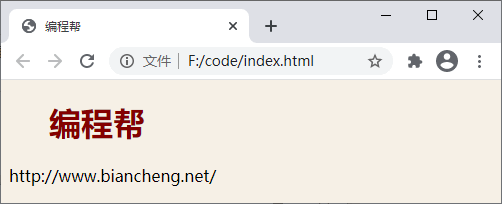
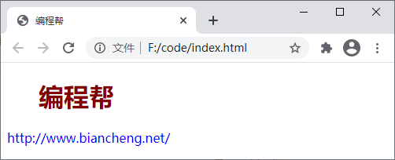

HTML引用CSS（4种方法）
CSS 样式需要引用到 HTML 中才能真正有效，那么如何才能在 HTML 中引用 CSS 呢？下面就来介绍一下。
因为内嵌样式表需要将 CSS 样式定义在 HTML 文档的内部，所以会导致文档的体积变大，而且当有其它文档也需要使用内嵌样式表中同样的样式时，无法引入到其他文档，必须在其它文档中重新定义，会导致代码冗余，不利于后期维护。
内联样式虽然可以很方便的为 HTML 标签赋予 CSS 样式，但它的缺点也非常明显，不推荐过多使用。
下面通过具体的示例来演示外部样式表的使用。首先，需要定义一个 .css 格式的样式文件（例如 style.css），如下所示：
图：外部样式表
因为 CSS 样式定义在单独的 .css 格式的文件中，所以可以在多个页面之间引用，若要修改网页的样式，只需要修改这个 CSS 样式文件即可，很方便。
假如还使用上面定义的 style.css 样式表，通过
图：导入样式表
在使用
1. 内嵌样式表
您可以在 HTML 头部（<head>标签内）的 <style> 标签中定义 CSS 样式，使用内嵌样式表定义的 CSS 样式只能在当前网页内使用，示例代码如下：
<!DOCTYPE html>
<html>
<head>
<title>编程帮</title>
<style>
body {
background-color: linen;
}
h1 {
color: maroon;
margin-left: 40px;
}
</style>
</head>
<body>
<h1>编程帮</h1>
<p>http://www.biancheng.net/</p>
</body>
</html>
运行效果如下图所示：

图：内嵌样式表
图：内嵌样式表
因为内嵌样式表需要将 CSS 样式定义在 HTML 文档的内部，所以会导致文档的体积变大，而且当有其它文档也需要使用内嵌样式表中同样的样式时，无法引入到其他文档，必须在其它文档中重新定义，会导致代码冗余，不利于后期维护。
2. 内联样式
内联样式就是将样式信息直接定义在 HTML 标签的 style 属性中，由于内联样式定义在标签内部，所以它只对所在的标签有效。示例代码如下：
<!DOCTYPE html>
<html>
<head>
<title>编程帮</title>
</head>
<body>
<h1 style="color: maroon; margin-left: 40px">编程帮</h1>
<p style="color: blue;">http://www.biancheng.net/</p>
</body>
</html>
运行效果如下图所示：

图：内联样式
图：内联样式
内联样式虽然可以很方便的为 HTML 标签赋予 CSS 样式，但它的缺点也非常明显，不推荐过多使用。
- 定义内联样式需要在每个 HTML 标签中定义 style 属性，很不方便；
-
在内联样式中使用双引号或单引号时要特别小心，因为 HTML 标签的属性通常都会使用双引号来包裹属性的值，例如
<input type="text">； - 在内联样式中定义的样式不能再其它任何地方重用；
- 内联样式在后期维护时很不方便，因为一个网站通常有很多页面组成，当修改页面样式时需要对页面逐个修改；
- 添加过多的内联样式会导致 HTML 文档的体积增大。
3. 外部样式表
外部样式表是最常见也是最推荐的引用 CSS 的方式，您只需要将 CSS 样式定义在一个 .css 格式的文件中，然后使用 HTML 的 <link> 标签将这个 .css 格式的样式文件应用到 HTML 文档中。下面通过具体的示例来演示外部样式表的使用。首先，需要定义一个 .css 格式的样式文件（例如 style.css），如下所示：
body {
background-color: linen;
}
h1 {
color: maroon;
margin-left: 40px;
}
然后我们在 HTML 文档中引入这个 style.css 文件，如下所示：
<!DOCTYPE html>
<html>
<head>
<title>编程帮</title>
<link rel="stylesheet" href="./style.css">
</head>
<body>
<h1>编程帮</h1>
<p>http://www.biancheng.net/</p>
</body>
</html>
运行效果如下图所示：图：外部样式表
因为 CSS 样式定义在单独的 .css 格式的文件中，所以可以在多个页面之间引用，若要修改网页的样式，只需要修改这个 CSS 样式文件即可，很方便。
4. 导入样式表
您同样可以使用 @import 来引用外部样式表，这一点与使用<link> 标签比较相似。使用 @import 引用外部样式表的语法格式如下：
@import "URL";
或者
@import url("URL");
假如还使用上面定义的 style.css 样式表，通过
@import 将其引用到 HTML 文档的代码如下：
<!DOCTYPE html>
<html>
<head>
<title>编程帮</title>
<style>
@import url("./style.css");
/*@import "./style.css";*/
</style>
</head>
<body>
<h1>编程帮</h1>
<p>http://www.biancheng.net/</p>
</body>
</html>
运行效果如下图所示：图：导入样式表
在使用
@import 引用 CSS 时有以下几点需要注意：-
在 HTML 文档中使用
@import时，@import需要定义在<style>标签中。如果<style>标签中还有其它的 CSS 样式，那么@import就必须定义在所有样式的最前面； -
@import同样可以在 .css 格式的文件中使用，但同样需要定义在所有样式的前面； -
@import是在 CSS2.1 中新增的功能，所以一些低版本的浏览器可能会不支持； -
在页面加载时，使用
<link>标签引用的样式文件会随页面同时加载，而使用@import引用的样式文件会等待页面加载完成后再加载。如果@import引用的样式文件过大、加载时间过长的话，在页面加载完成后就会出现没有样式的情况，影响用户体验。
关注公众号「站长严长生」，在手机上阅读所有教程，随时随地都能学习。内含一款搜索神器，免费下载全网书籍和视频。

微信扫码关注公众号